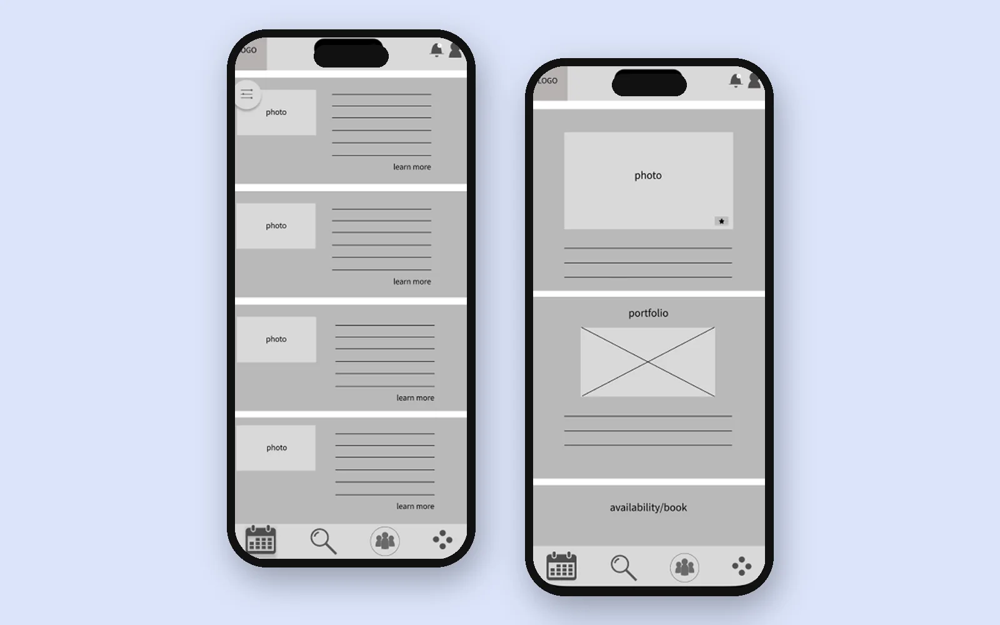
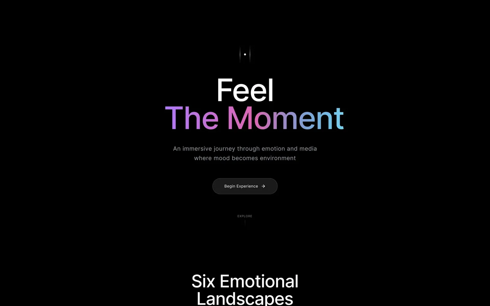
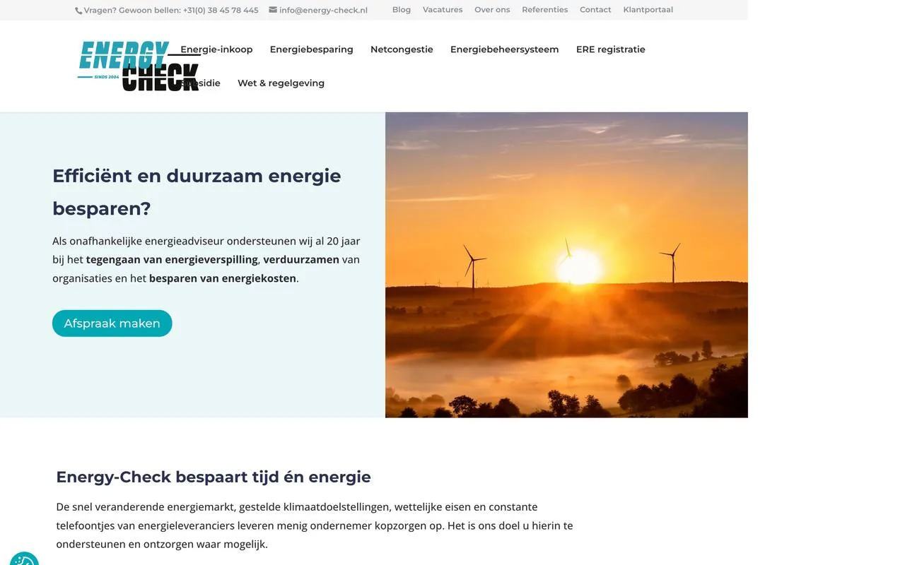

Expert
UX case study
An advice app built around two research themes: trust before booking, and availability.
- My role
- End-to-end UX research and design

UX/UI and product designer with a background in fashion and nearly ten years in hospitality.
Where would you like to start?
UX case study
An advice app built around two research themes: trust before booking, and availability.

Experimental concept
A streaming app concept where you choose a mood before a genre.

Take-home assignment, B2B website
A homepage redesign to make a 20-year-old energy consultancy sound like its team.

Mobile concept
A calm place for important documents you rarely need, until you suddenly do.
Fashion trained my eye.
Hospitality taught me to notice where people get
stuck.
I'm a UX/UI and product designer in Amsterdam. Before moving into design, I studied fashion and spent nearly a decade in hospitality, including several years leading hotel and hostel teams of 20+ in Amsterdam and Melbourne. Fashion gave me an eye for proportion and detail. Hospitality taught me to read people and notice where an experience starts to break down.
Since completing CareerFoundry's Product Design programme, I've worked across user research, flows, interface design and design systems. I also take on freelance brand and web projects, and have a working knowledge of HTML, CSS and JavaScript, which I used to build this portfolio, with AI as a coding partner. I'm currently looking for my next full-time role in product or UX/UI design.
LinkedIn (opens in a new tab)Download CV (PDF)